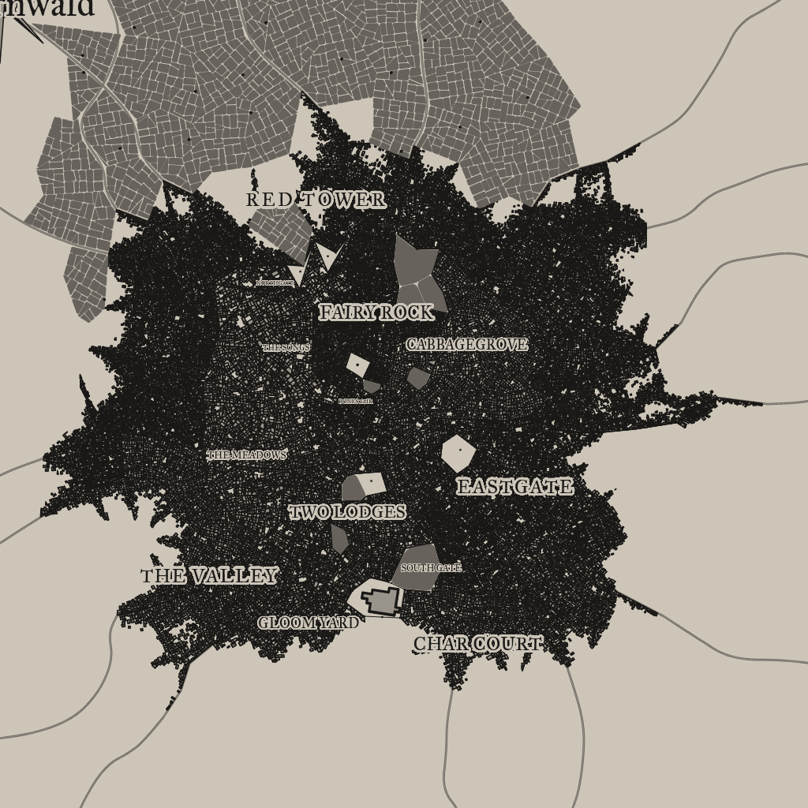

Wyvernwald
A mystical settlement in a fantastical world

Background Flavor
This location was once a training ground for the gladiatorial combat of a long-fallen empire. At the outskirts of town is an ancient and crumbling arena, and 4 times a year the village holds events showcasing feats of strength and athletic mastery.
1
Settlement Features
Wyvernwald is a large city 10,001-25,000 located in the flat lands region of the areas greater grassland. The settlement seems to be new. Wyvernwald and the local surroundings are under the control of the local colonists.
Demographics
- Name: Wyvernwald
- Size: Large City 10,001-25,000
- Real population: 16376
- Population Density: Ample
- Wealth: Ample
- Number by race: Human 40%, Dwarf 10%, Elf 10%, Gnome 10%, Halfling 10%, Half-elf 15%, Half-orc 5%,
- Wealth: Average
- Age: 1
- Alignment: Lawful Evil
- Government Type: The Local Colonists - A group of councilors leads the settlement.
- Settlement Trait: Gambling
- Number Of Wards: 169
- Number of Districts: 19
Industry and Economy
- Primary Raw Materials: Mining
- Shops of Note: Blacksmith, Instrument Crafter, Baker, Stable, Adventure Supplies, Artist: Potters, Investigator, Tailor, Lawyer, Locksmith.
- Number Of Inns/Taverns: 2
- Inns/Taverns of Note: Arrogant Nightmare Pub, The Crooked Highwayman Pub, Black Beekeeper Inn, The Ball, Laughing Vine and Dead Explorer, The Brass Physician Tavern, Lucky Midwife Arms.
Districts
Upper Skugailt
Academic: Scholar’s hovel, schoolhouse, alchemist’s laboratory, library, archives, observatory, university.
Upper East Winwoopt
Midtown Cledard: Historic: Old inn, founder’s house, ancient city, ruins district.
Lower South Glostes
Ruling: Town hall, lord’s manor, palace.
Newup Row
Craft: Blacksmith, tanner’s row, maker’s street, guild canton, loomworks.
West Loattoatnift Grove
Foreign: An area defined by its cultural, ethnic, political, or linguistic composition –dwarftown, the foreign legation, the goblin ghetto, the Halfling hillside. Language skills, Cultural Familiarities, Savoir Faire etc are appropriate.
Lower East Fisp
Graveyard: Graveyard, cemetery, crypt, mausoleum, necropolis.
Remmest Side
Money: Pawnbroker, moneylender, jeweler, bank, gemcutter, mint.
Tais Town
Green: Common, green, herbalist, fishery, garden, lumberyard, granary, farm, parkland.
Cloowergost Cross
Plaza: Well, fountain, stele, statue, piazza, plinth, monument, town square, park, plaza, grand arcade.
Upper West Spadlork
Law and Order: Guardhouse, watchtower, gallows, gaol, prison, courthouse.
Citrine Woods
Underworld: Back alley, mugger’s row, gang turf, smuggler’s den, thieves district.
Midtown Cledard
Portage: Jetty, roadhouse, mooring, stables, shipwright, lighthouse, caravanserai, lumberyard, docks, tradehouse, port, harbor, public baths, surgeon, hospice.
South Naippais
Hazardous: Old well, abandoned mine, crumbling ruins of the old town, sinkhole, blood forest, scree slope, buried canton, magma pit.
South Spleld
Rich: Gentleman’s house, manor, finishing school, mansion, manor district.
Pleecerd Vale
Culture: Tavern, playhouse, horse track, theater, tournament lists, menagerie, concert hall, arena, circus, colosseum,
Splofiloast Valley
Trade: Stall, trader’s row, market, auction house, fish market, guild-house, merchant’s guild, grand bazaar.
Lower East Gald
Poor: Shack, orphanage, slums, workhouse, shanty town.
Downtown Scroppand
Military: Barracks, parade grounds, archery range, tower, armory, keep, castle, citadel.
Girveb Road
Religious: Sacred font, shrine, temple, monastery, church, abbey, cathedral, ecclesiastical courts.
Taverns / Inns
Arrogant Nightmare Pub
Location
Upper West Spadlork
Description
The inn is a modest wooden building, with roughly hewn wooden tables and benches. A fake dragon's skull hangs over the hearth. Accommodations consist of several hammocks in the common room.
Innkeeper
Bob
Menu
- Roast Goose strewn with Caraway seeds (4 sp)
- Cheese rolls with a filling of nuts, honey and vegetables (6 cp)
- Roasted and Smoked Pork Spareribs (6 sp)
- Smoked Salmon Salad (4 sp)
- Veal sweetbreads, Sharp cheese, Leeks, Peach (2 gp).
The Crooked Highwayman Pub
Location
Upper Skugailt
Description
You did hear rumors about this tavern, supposedly it's infamous for something, but for the life of you you can't remember what for. Though juding by everything in this place, it must be something horrifying.
Innkeeper
Bob
Menu
- Stewed Onions, Mug of Cider (5 cp)
- Mixed grill, Collard greens, Chick peas, Rice, Plum pudding (2 gp).
- Blood pudding, Curds, Chicken eggs, Strawberries, Oatmeal (1 sp).
- Roast Stuffed Leg of Lamb with Mint Sauce (6 sp)
- Kito's Spiced Potatos (7 cp)
Black Beekeeper Inn
Location
South Naippais
Description
The bartender is talking to a customer and makes no effort to acknowledge your pressence.
Innkeeper
Bob
Menu
- Boiled Eggs and Buckwheat Bread, Tankard of Mead (11 cp)
- Stuffed Mushrooms with Thyme and Creamcheese (4 sp)
- Apple Stuffed Mushrooms (8 cp)
- Kito's Spiced Potatos (7 cp)
- Stewed Onions, Mug of Cider (5 cp)
2
The Ball
Location
Lower East Gald
Description
You did hear rumors about this tavern, supposedly it's infamous for something, but for the life of you you can't remember what for. Though juding by everything in this place, it must be something horrifying.
Innkeeper
Bob
Menu
- Mixed grill, Collard greens, Chick peas, Rice, Plum pudding (2 gp).
- Pottage, Mug of Perry (4 cp)
- Roast Stuffed Leg of Lamb with Mint Sauce (6 sp)
- Roasted Cabbage, Mug of Stout (4 cp)
- Roasted and Smoked Pork Spareribs (6 sp)
Laughing Vine and Dead Explorer
Location
South Spleld
Description
It's impossible to see through the closed windows, but the quiet sorrow from within can be felt outside.
Innkeeper
Bob
Menu
- Apple Stuffed Mushrooms (8 cp)
- Stewed Sausage and Soft Cheese, Tankard of Stout (8 cp)
- Roasted Cabbage, Mug of Stout (4 cp)
- Chicken Liver Pate and Bread (3 sp)
- Pork liver, Seaweed, Succotash, Rice, Fruitcake (2 sp).
The Brass Physician Tavern
Location
Lower East Gald
Description
The bartender is extremely busy, but still manages to welcome you with a friendly nod.
Innkeeper
Bob
Menu
- Boiled Eggs and Dried Leek, Tankard of Stout (10 cp)
- Roasted Cabbage, Mug of Stout (4 cp)
- Stewed Onions, Mug of Cider (5 cp)
- Smoked Salmon Salad (4 sp)
- Stewed Lentils, Mug of Cider (3 cp)
Lucky Midwife Arms
Location
Cloowergost Cross
Description
From the outside it looks homey, humble and warm. Logs and wooden pillars make up most of the building's outer structure.
Innkeeper
Bob
Menu
- Ham, Quail eggs, Duck eggs, Melon, Sea oats (2 gp).
- Grilled Fillet of Salmon (6 sp)
- Pork chop, Chicken eggs, Black beans, Apple (2 sp).
- Roasted Mushrooms, Mug of Cider (4 cp)
- Stewed Mutton and Whey Cheese, Tankard of Perry (8 cp)
3